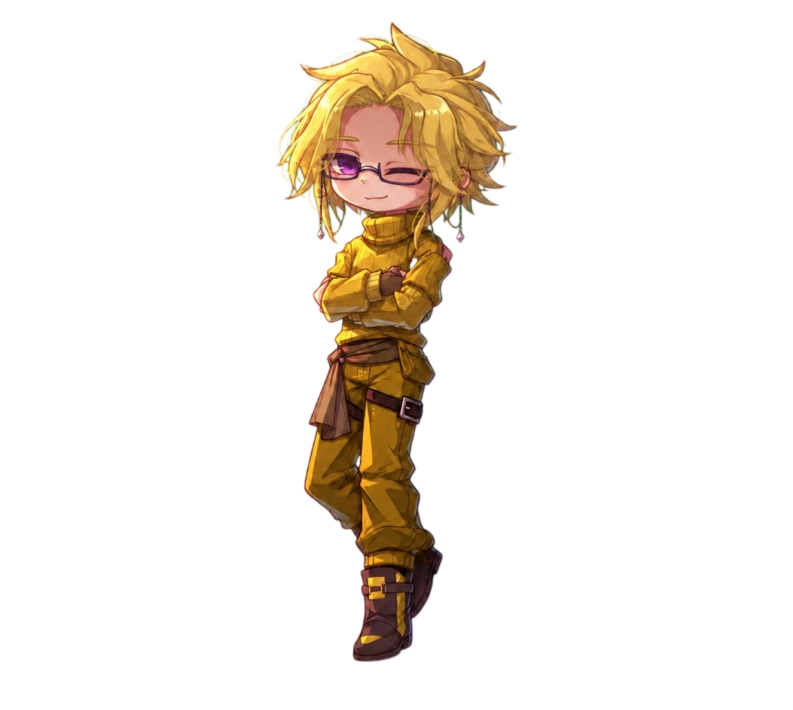

Доброго времени суток, читателям и всем, кто просто заглянул сюда! Этот сайт создан специально для публикации рассказов автора Desta по мотивам Gacha. Подробнее об авторе можно узнать в разделе Обо мне по ссылке. В этом же разделе можно связаться со мной по моему телеграм-канал (те кто будет просто так ни за что хейтит сразу в чс)
Чтобы прочитать рассказы нажмите на раздел Рассказы . После прочтения просьба запомнить номер страницы или главы, так как разраб(тоже Desta) не додумалась еще как сделать сохраненку(ну или я хз работает ли)(Опытные программисты найдитесь пожалуйста..)
Главные и второстепенные персонажи представлены в разделе Персонажи. Там можно узнать их истории, увлечения и то, в каких рассказах они появляются.
Так же можно зайти в свой аккаунт . В нем можно будет смотреть какие рассказы прочитаны и прогресс игр
К сожелению Игры на данный момент отсутствуют